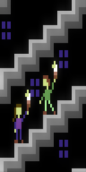

typical stairs by shi in 48x48 #pixelart using the C64 palette. Visit http://paint.lo4d.net/ to draw your own!

odd anchor by XIX in 16x16 #pixelart using the Swanky32 palette. Visit http://paint.lo4d.net/ to draw your own!
@CharlotteGore @shi Yup, that's on the list of things to add, nothing too complicated it just takes building a GUI to do it.
@CharlotteGore @shi What I want is to be able to set a mapping between animation and sheet but yes layers works that way now so use them :)
https://twitter.com/wetgenes/status/566294505742434304 @CharlotteGore @shi it just has a bit of a terrible interface at the moment :)
https://twitter.com/wetgenes/status/566293726042279936 @CharlotteGore @shi so its intended to make animation of separate parts easier. that's all. eg
@CharlotteGore @shi I'm just doing layers as chopped up images so I can use standard image files, I'd expect them to be flattened before use
@CharlotteGore @shi I'm trying to keep to real dpaint keys. The only major deviation so far is 123456 mapping to anims/layers/images.
New Alpha+8 version of swanky paint is up and out. Here are the latest updates http://youtu.be/II7kHW-rT-A #pixelart #dpaint #gamedev
This is exactly how "Big trouble in fat pixels!" shall begin https://www.youtube.com/watch?v=Q1ZTzltMjKo&t=27 probably. #gamedev
https://twitter.com/sgtruck/status/565843649121255424 @sgtruck probably a bit bury, I think you would need a vectrix/asteroid/scope style display for great justice. Yeah play it on a scope :)
Games for Everybody by May C. Hofmann Featuring the classic OUR COOK DOESN'T LIKE PEAS http://www.gutenberg.org/files/8439/8439-h/8439-h.htm
but at least once arcade machine is upgraded I can easily put my own games on it :) I knew there was a reason we made a 2 player GThang.
https://twitter.com/johnleach/status/565829751085215745 @johnleach technically you could use the composite out to an old TV, but the arcade monitor I have is RGB input only, so it gets complicated
https://twitter.com/sgtruck/status/565828443586441216 @sgtruck Yup, sadly it is a conga line of dongles to get a 15k 320x240 RGB signal out of the PI to drive a proper arcade monitor.
VGA to CGA converter is here which means I can now upgrade my arcade machine from an old Xbox to a #raspberrypi

Heading off to #bradford #badonkadonk to find us look for the large white guy with a stupid beard braid. http://xixs.com/badonkadonk
@magic_bane The C64 version used 12 as punch kick buttons or something didn't it? Cant remember if it was joystick + keyboard control.
Hmm, are arcade boards ancient relics now? Maybe I should have some framed to hang on the wall or something.